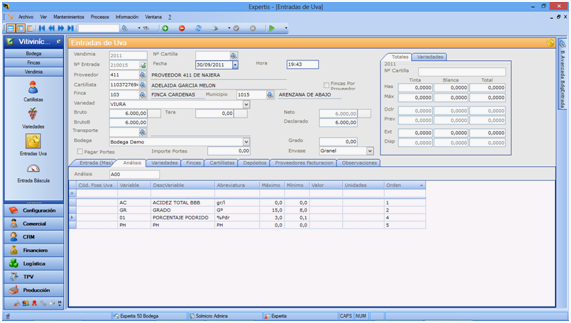
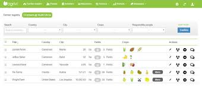
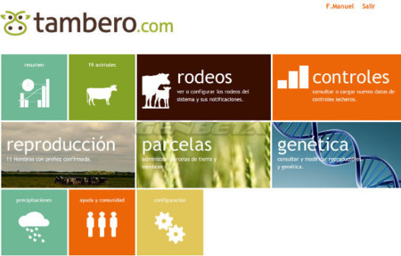
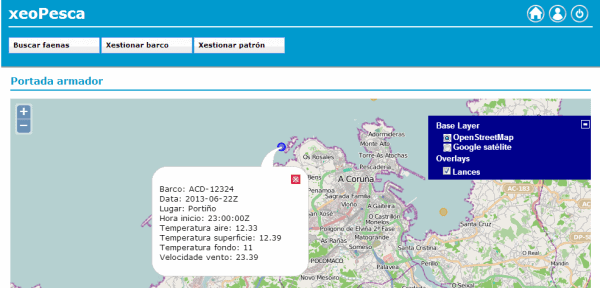

| # | Herramienta | Interfaz | Descripción | Ventajas |
|---|---|---|---|---|
| 1 |
ERPAgro |
 | ERPagro es una herramienta dedicada a la integración de los procesos en el sitio desde los agricultores independientes o la producción interna hasta la comercialización a través de la trazabilidad automática integral e independiente, el control de calidad y el control detallado de costos. Muchas soluciones solo proporcionan herramientas aquí, en lugar de centrarse en los aspectos económicos de la gestión empresarial como otros ERP. |
|
| 2 |
Agrivi |
 | El software de gestión agrícola de Agrivi le permite planificar, monitorear y analizar fácilmente todas las actividades en el cultivo. Cultivar, sembrar, fumigar, fertilizar, regar, cosechar; controlar estas y todas las demás actividades con unos pocos clics. |
|
| 3 |
Tambero |
 | Si eres un profesional que trabaja en múltiples fincas en cualquier campo de producción agrícola, Tambero.com es la herramienta ideal para ir a este campo. Sus características son fáciles de usar, lo que le permite completar tareas complejas en minutos. |
|
| 4 |  | Es una aplicación web que permite crear registros de operaciones de pesca y asociarlos con las variables meteorológicas y geográficas que más influyen en el comportamiento de la gente de mar. Esto convierte a la aplicación en un compendio de la experiencia de pesca, lo cual es muy valioso para el capitán, ya que en función de las condiciones meteorológicas diarias, el capitán sabrá en qué lugares es más probable pescar |
|